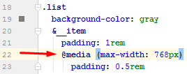

Описание
Технологии используемые в данной сборки
- Gulp
- Bower
- BrowserSync
- AdaptivePixelPerfect
Простой старт
- Выполнить в консоле: "git clone https://github.com/OrelSBinoklem/front-template.git" вызываем консоль, вставляем строку и нажимаем "Enter". Из появившейся папки переносим все файлы в корень
- Выполнить в консоле: "npm i && bower i" (требуется Node.js и Bower, установленные глобально). как установить node, как установить bower,
- Все файлы .gitkeep можно удалять.
- В config/packer.js как минимум определить обязательные настройки (в которых значения undefined).
- Для запуска gulp можно использовать файлы development.bat и production.bat (тестировал только в windows)
- Вёрстка доступна по адресу: http://localhost:3000
AdaptivePixelPerfect доступен по адресу http://localhost:3010/?a-pp=1
Адрес для смартфонов через WI-FI:
Настройки
packer
packer второстепенные опции
bower-overrides
bower-concat
Правила написания стилей
- Селекторы
-
Все элементы деляться на блок-элемент как и в БЭМ
-
Модификаторы блока задаються в контексте блока следующим образом
-
Классы состояния можно задавать простыми классами но не как в БЭМ, обязательно в контексте элемента или самого блока
-
Крайние контентные теги h1-h6, p, a, img и др. можно прописывать в формате вложенных селекторов, если один тег имеет несколько разновидностей можно использовать простые классы. Пример (классы "text" и "description" для тегов "p"):
-
Не рекомендуеться использовать вложенно вложенные конструкции классов в sass, потому что код становиться тяжело воспринимаемым запутанным и при использовании классов состояний придёться писать полностью имя классов без использования спецсимвола "&":
-
- Свойства
- Вначале display, float, position
- На втором месте margin, padding, width, height, top, left, right, bottom
- Остальное на своё усмотрение
- Медиазапросы
Обязательно пишем в каждом селекторе:

AdaptivePixelPerfect
Для начала работы вы должны залить скриншоты дизайна в папку design перезапустить gulp если он запущен и перейти по адресу: http://localhost:3010/?a-pp=1
- зажать левую кнопку мыши + 1 - 9, 0 (переключение между разрешениями)
- зажать левую кнопку мыши + W, A, S, D (навигация по вёрстке если её разрешение выше экрана браузера)
- зажать левую кнопку мыши + Z, X, C (вёрстка, вёрстка поверх дизайна, картинка дизайна)
- Ctrl + R + двигаем мышь (ручное изменение размеров окна с вёрсткой)
Кратко о панели:
- Слева
- Текущее эмулируемое разрешение
- Ваши добавленние варианты разрешений
- Здвинуть панель вниз
- Справа
- Страницы
- Разрешения и картинки дизайна
- Управление наложением вёрстки на дизайн
- Вёрстка
- Вёрстка поверх дизайна
- Картинка дизайна
- Настройки
bower
Уроки по основам бовераУстановка плагина
Допустим мы решили установить CSS фреймворк "foundation":
- Загрузка плагина
- Устанавливаем bower, если он не установлен выполнив в консоле команду:"npm i -g bower"
- Заходим на сайт бовера https://bower.io/ переходим на страницу поиска
- Пишем в поиск "foundation" и смотрим:обращаем внимание на количество лайков - иногда название того что нам надо может отличаться...
- Определяемся с выбором и нет не выбираем, а копируем название
- Открываем консоль и пишем: "bower i -D имя_плагина", в данном случае имя_плагина это "foundation-sites" нажимаем Enter
- Перенос нужных файлов в конечную вёрстку и объединение плагинов
- Запускаем gulp чтобы он перекачал необходимые нам файлы из дистрибутива который лежит в bower_components в папку для плагинов в конечной вёрстке build/vendor названия папок можно менять через опции "dest" и "bowerDest"
Все эти извороты для того чтобы тупые заказчики неудивлялись тому что в вёрстке которую они получили в папке с плагинами лежит несколько тысяч файлов... Вообщето по профессиональному иммено так и должно быть мы должны сохранять в вёрстке весь дистрибутив хоть там и тысячи файлов они никак невлияют на загрузку страниц, немного весят и могут нам в будущем понадобиться
- Изучаем папку с перекачанными файлами:

видим какойто scss да и файл скрипта несжатый. Именно так в основном и происходит потому что такие правила оформления bower плагинов. Для решения данной проблемы существует файл настроек config/bower-overrides.js Лезим в папку bower_components/foundation-sites ищем главный css файл и сжатый js также можно поизучать файл bower.json бо может для плагина нужны ещё какие нибудь дополнительные файлы, например для локализации также поскольку мы переносим файлы незабываем перенести шрифты и картинки так как пути к ним в стилях становяться неактуальными.
Прописываем нужные пути в настройки:
-
Если нужно обьединить несколько плагинов в один css и js файл можете использовать файл настроек config/bower-concat.js
Имя свойства "plugins", это имя обьединнённого плагина, его будете использовать при подключении плагинов на странице, а также оно используеться в имени общего генерируемого css и js файла, в нашем случае это будут "plugins.css" и "plugins.js".
Объединённые файлы помещаються в корень папки build/vendor и наш зборщик проекта попытаеться поправить пути в стиляк к файлам картинок и шрифтов (алгоритм пока ещё нормально нетестировался).
Внутрь свойства в ставляете массив и в нём в виде строк перечисляете названия плагинов которые нужно объединить
Незнабываем что плагины могут друг от друга зависеть поэтому думайте что с чем объединять и как потом это выводить. Я рекомендую если вам сильно неважна оптимизация когда мы подключаем только нужные плагины на каждой странице, просто взять и объединить все фреймворки, библиотеки и другие плагины от которых зависят большинство плагинов в один с названием lib, а всё остальное в plugins.
- Запускаем gulp чтобы он перекачал необходимые нам файлы из дистрибутива который лежит в bower_components в папку для плагинов в конечной вёрстке build/vendor названия папок можно менять через опции "dest" и "bowerDest"
- Подключение плагина
- На каких страницах и какие плагины выводить определяем в файлах src/pug/includes/styles.pug и src/pug/includes/scripts.pug Для вывода стилей используеться миксин pasteStyles а для скриптов pasteScripts
Миксины можно использовать несколько раз в разных местах. При этом незабывайте о зависимостях плагинов!В миксин передаёться массив, внутри массива ещё массивы они идут парами нечётные определяют на каких страницах подключать плагины а чётные какие плагины. В массивы можно передавать любое количество значений, в массив который определяет на каких страницах подключать плагины может принимать не только строки с названиями страниц но и регулярные выражения. Пример:В данном примере мы подключаем на всех страницах "reset-css", на страницах названия которых начинаються с "case-" и "auth-" плагины "malihu-custom-scrollbar-plugin" и "fancybox", а на странице "registration" плагин "jquery-validation"
Сжатие картинок и спрайты
Сжатие
Доступно 5 степеней сжатия картинок:
- "perfect" - идеальное
- "good" - хорошее
- "normal" - нормальное
- "simple" - простое
- "low" - пониженное
Рекомендуеться применять только "good" | "normal" | "simple" бо остальное несовсем здраво!
По умолчанию качество сжатия определяет параметр "imgCompressPolicy". Без определения данного параметра сборка незапуститься вы должны обсудить с заказчиком что для него важнее качество или меньший обьём и установить значение "good" или "simple" соответственно
Папки
src
+---img
| +---good
| +---simple
| +---icons
| +---low
| \---pics
|
+---pug
| \---mixins
| svg-icon.pug
|
\---sass
| main.sass
|
\---mixins
sprite.sass
tmp
\---sass
_png-sprite.sass
_svg-sprite.sassТипы картинок
- Картинки оформления
- Картинки которые отвечают за оформление (в основном их прописывают через стили). Должны лежать в корне папки img и других папках кроме зарезервированых. Их качество определяет параметр "imgCompressPolicy".
- Контентные картинки
- Картинки которые являються частью контента (в основном их прописывают через тег img в html). Должны лежать в папке img/pics. Их качество определяет параметр "imgCompressPics". По умолчанию жмуться с качеством "simple" так как неочень важны и могуть быть заменены заказчиком
- Картинки для спрайта
- Мелкие картинки для оформления (всякие загугуленки вокруг блоков например) и иконки. Должны лежать в папке img/icons. Всегда жмуться с качеством "good" так как дефекты на значках заметны а жать в "perfect" нездраво!!!
Спрайты
tmp/sass/_png-sprite.sass и tmp/sass/_svg-sprite.sass в этих файлах храняться все данные о спрайтах: адрес картинки спрайта, размеры и координаты картинок из которых зделан спрайт (можете сами поизучать данные файлы)
src/sass/mixins/sprite.sass тут находяться миксины для вывода данных о спрайте
- @mixin sprite($sprite) - выводит свойства одной png иконки
- @mixin retina-sprite($retina-group) - тоже самое только для ретины или 4к
- @mixin sprites($sprites) - выводит стили для всех png иконок.
- @mixin retina-sprites($retina-groups) - тоже самое только для ретины или 4к
- @mixin svg-sprite($sprite) - выводит свойства одной svg иконки
- @mixin svg-sprites($sprites) - выводит стили для всех svg иконок.
PNG иконки вставляються через любой тег и класс с именем иконки или через миксин который выводит свойства иконки - надо просто вставить в стиль миксин и передать в него переменную с именем иконки.
Чтобы иконки были под ретину необходимо указать параметр "spritePngPostfix2x", например "@2x" и ложить в папку с обычными иконками такие точно иконки но с удвоенным разрешение и именем:"имя_обычной_иконки@2x.png"
SVG иконки вставляються через миксин mixin icon(name) который находиться в src/pug/mixins/svg-icon.pug ему передаеться имя иконки.
SVG иконки могут маштабироваться через свойство font-size в стилях а также если изменять базовый размер шрифта в html, поскольку в свойствах иконки используються rem и em
SVG иконкам можно задавать цвет через обычное свойство color в стилях, но перед этим надо их обесцветить, для этого надо задать параметр "spriteSvgClearColor" в true
{kind=link}
{kind=link}
{kind=link}
{kind=link}
{kind=link}
{kind=link}
{kind=link}
{kind=link}
{kind=link}
{kind=link}
{kind=link}
{kind=link}
{kind=link}
{kind=link}
{kind=link}
{kind=link}
{kind=link}
{kind=link}
{kind=link}
{kind=link}
{kind=link}